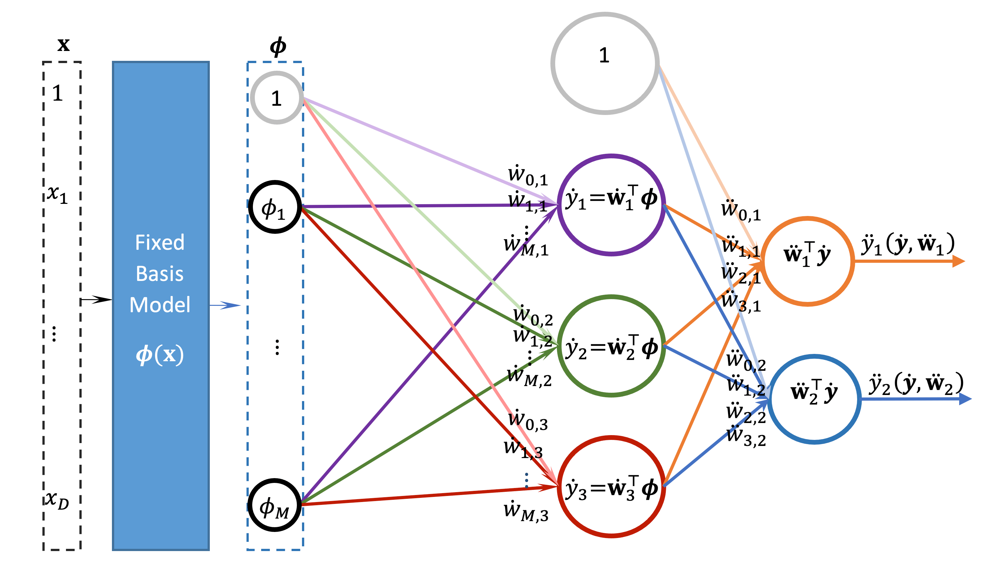
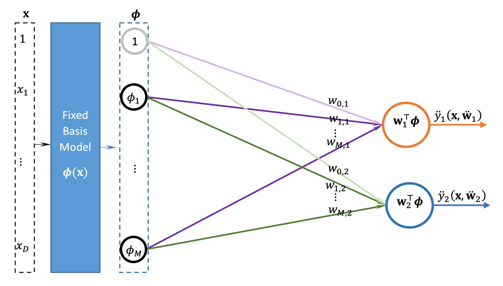

Preventing overfitting the data and overshooting the loss minimum
In this section we tackle overfitting for stochastic gradient decent algorithms. We provide several mechanisms to prevent overfitting. The first goes to the level of the loss function itself via regularisation similar to what we have covered earlier. The second is via a combination of sweeps through the dataset (epochs) as well as weight decay and early stopping.
At the same time these techniques are suitable to prevent overshooting the global minimum of the loss function (if there is one). Remember in SGD we are going in steps towards the minimum of the loss function. On the way, our algorithm might overshoot the minimum and keep fluctuating around it. This is often due to a high learning rate. Overshooting the global minimum and ending up in a local minimum is another problem that we often face with more complex models such as neural networks. In fact, overcoming local minima and the fact that a neural network loss function is infested with these local minima are among the main motivation for the next subsection.
Regularised multi-output least squares for linear regression model with basis
For the least squares we can regularise it by using the vectorised form of the loss function on the whole training set as follows:
We simply can obtain the gradient as:
We set the gradient as usual to 0 and solve in order to obtain optimal solution \(\mathbf{W}^{*}\):
Which is the regularised normal equation as above for multi-output linear regression.
Algorithm 1'': Least Squares for Multi-output Linear Regression Model with Gaussian Basis
Input: Dataset as a design matrix \(\mathbf{X}=\left[\mathbf{x}_{1}^{\top}, \ldots, \mathbf{x}_{N}^{\top}\right]^{\top}\) each \(\mathbf{x}_{n}\) is of size \(D\)
Corresponding labels matrix \(\mathbf{T}=\left[\boldsymbol{t}_{1}^{\top}, \ldots, \boldsymbol{t}_{N}^{\top}\right]^{\top}\) each \(\boldsymbol{t}_{n}\) is of size \(K\)
\(\boldsymbol{\mu}_{j}: M\) Basis centres, each is a vector of size \(D\)
\(\boldsymbol{\Sigma}\) : Covariance matrix of size \(\mathrm{D} \times \mathrm{D}\)
Output: \(W^*\) optimum weights; a matrix of size \((M+1)×K\)
RLS_LRegressBasis \((\mathbf{X}, \mathbf{T}, \boldsymbol{\mu}, \mathbf{\Sigma})\): # \(B\) for basis, \(K\) Outputs
Map the data \(\mathbf{X}\) into design matrix \(Φ\) via the Gaussian basis \(\phi_{j}\left(\mathbf{x}_{n}\right)=e^{-\frac{1}{2}\left(\mathbf{x}_{n}-\mu_{j}\right)^{\top} \Sigma^{-1}\left(\mathbf{x}_{n}-\mu_{j}\right)}\)
\(Φ=[1_N,Φ]\) # add dummy feature to the design matrix
\(\mathbf{W}^{*}=\left(\mathbf{\Phi}^{\top} \mathbf{\Phi}+\lambda \mathbf{I}\right)^{-1}\left(\mathbf{\Phi}^{\top} \mathbf{T}\right)\)
Return \(\mathbf{W}^{*}\)
Regularised multi-output stochastic gradient descent for linear regression model with basis
Similarly, the above can be done on a multi-output regression.
Where \(‖W‖^2\) is the Euclidean norm of the weights matrix, which is just the sum of the squares of all of the elements of \(W\). More formally, this is called Frobenius norm and is defined as \(\|\mathbf{W}\|_{F}^{2}=\sum_{i=1}^{K} \sum_{j=1}^{K} w_{i, j}^{2}\).
This in turn allows us to take the derivative with respect to one data point:
When we do not know \(N\) in advance we just can suffice by a smaller learning rate \(η\):
Before we state the regularised mini-batch SGD we would like to add few more techniques to our arsenal against overfitting.
Early stopping and learning rate decay
One of the main tools to prevent overfitting is regularisation as we saw earlier.
Going through several epochs can be combined with learning rate decay to stabilise and prevent overshooting the minimum of the loss function. Overshooting the global minimum and ending up in a local minimum is a problem that we often face with more complex models such as neural networks. In fact overcoming local minima and the fact that a neural network loss function is infested with these local minima is the main motivation of going through several epochs and to shuffle the data along the way in order to make sure that we head toward the global minima from several directions. Also, SGD with just one point update helps us to overcome some of the local minima on the way of the global minimum due to its high variance. When we move to a mini-batch SGD setting we hope to keep this ability but to further stabilise the process. This randomisation helps the convergence of the solution to a global minimum. In the case of the simple linear model this is not a problem since we have a convex loss function that has just one global minimum.
Actually, having epochs with learning decay and early stopping are all a little excessive for linear models and are only justified for special cases when the dataset is extremely large, nevertheless for the sake of completeness of coverage and to gain familiarity with these central concepts in modern data science and machine learning, we show them here. On the other hand, since going through several epochs can lead in some cases to a convergence earlier than we might expect we can add also the concept of early stopping by checking if the loss value has increased beyond a specific threshold.
If you remember in Unit 2 we have spoken about discovering overfitting via comparison of accuracy/error on training set and a validation (or testing) set. Overfitting starts to occur when the performance of the training keeps increasing while the performance on a validation set starts to decrease (i.e. they forked). The same concept applies here on regression, but we use a different metric such as the MSSE. So, to detect overfitting we just have to look at the performance of a hold out set while we are training the model. Once the loss of the model on the validation set starts to increase, we can just stop training. This is called early stopping and it can be done in several ways we cover the basic idea only. We need to realise two things here. The first is that the performance of the hold out set tends to fluctuate a bit so we cannot just stop learning immediately once the generalisation error of the validation set starts to increase. We need to be patient and allow for a leeway for the error to fluctuate a bit. We can do that via a hyper parameter ε where we stop training only when the current validation error exceeds the past validation error beyond \(ε\).
The second thing is that we need a way to track back our best weights before the latest update that led to the increase of the generalisation error. So, we need a mechanism to store the best weight and only update them if we are sure that the latest update result in no increase in the generalisation error. We will do this on the level of the epochs not on the level of the mini-batches because individual mini-batch may not necessarily reflect the whole picture of the error. So we will often set an enough high number of epochs and we employ early stopping to stop when we reach the critical point of having maximally trained the model and it reached its peak performance and just before it starts to overfit the data and capture the noise along the patterns in the data.
One thing we would like to point out is that early stopping has been shown to be equivalent to regularisation so both have similar effect of clipping the weights and preventing them from overly changing to accommodate noise as well as the pattern in the data.
The final regularised mini-batch SGD algorithm that is fortified against overfitting is shown below.
Algorithm 6'': Regularised Mini-Batch Stochastic Gradient Descent Updates for Linear Regression Model with Vectorisation
Input: Input set as a design matrix \(\mathbf{X}=\left[\mathbf{x}_{1}^{\top}, \ldots, \mathbf{x}_{N}^{\top}\right]^{\top}\) each \(\mathbf{x}_{n}\) is of size \(D\)
Labels set as a matrix \(\mathbf{T}=\left[\boldsymbol{t}_{1}^{\top}, \ldots, \boldsymbol{t}_{N}^{\top}\right]^{\top}\) each \(\boldsymbol{t}_{n}\) is of size \(K\)
\(\mathbf{X}^{\prime}, \mathbf{T}^{\prime}\) holdout validation set that have similar structure to the above
\(\boldsymbol{\mu}_{j}: M\) Basis centres, each is a vector of size \(D\)
\(\boldsymbol{\Sigma}\) : Covariance matrix of size \(\mathrm{D} \times \mathrm{D}\)
\(\eta_{0}\): initial learning rate
b: mini-batch size (specifies how frequent we want to update the weights \(\mathbf{W}\)
\(\lambda:\) regularisation parameter
\(ep\): max number of epochs
\(\varepsilon\): early stopping threshold
Output: \(W\) an approximation for optimum weights \(W^*\); a matrix of size \((M+1)×K\)
SGD_RegressBasisK \(\left(\mathbf{X}, \mathbf{T}, \mathbf{X}^{\prime}, \mathbf{T}^{\prime}, \eta_{0}, b, \lambda, e p, \varepsilon\right)\):
Initialise \(\mathbf{W}, \mathbf{W}^{\prime}=\mathbf{W}, \eta=\eta_{0}\) and \(\bar{J}_{0}=\infty\)
For epoch = 1: \(ep\) # hyper parameter: max number of epochs
For iteration \(τ=1:q\) # \(q≥N/ b\)
Select a mini-batch \(X_τ,T_τ of size b from X,T\) # randomly or by shuffling & partitioning
Map \(X_τ to Φ_τ: ϕ(x_n)=(1,ϕ_1,…,ϕ_(M-1))\) # \(ϕ_j (x_n )=N(x_n│μ_j,Σ) or other basis\)
\(\mathbf{W}^{\prime}=\left(1-\frac{1}{b} \eta \lambda\right) \mathbf{W}^{\prime}+\frac{1}{b} \eta \mathbf{\Phi}_{\tau}^{\top}\left(\mathbf{T}_{\tau}-\mathbf{\Phi}_{\tau} \mathbf{W}^{\prime}\right)\) # update with regularisation
Decay \(η\) # if necessary
\(\bar{J}_{e p}=\frac{1}{2 N}\left\|\mathbf{T}^{\prime}-\mathbf{\Phi}^{\prime} \mathbf{W}^{\prime}\right\|^{2}\) # calculate the loss or other metric on the validation set
If \(\bar{J}_{e p}>\bar{J}_{e p-1}+\varepsilon:\) break # simple early stopping or other more sophisticate cond.
Else \(\mathbf{W}=\mathbf{W}^{\prime}\)
Return the final solution \(W\)
Note that we did not have an algorithm for the least squares because we cannot do it for multi-layer non-linear neural network. In all of the algorithms for mini-batch we have given them number 6 (6, 6', 6'') the ‘ signifies the stage of the algorithm, where they cover: linear, linear with basis, linear with basis and multi-outputs, respectively.
See Angela Meyer's paper for an idea why we might want to use multi-output models even if our target is a single value: Multi-target normal behaviour models for wind farm condition monitoring.
Note that arXiv papers are not necessarily peer-reviewed, so we need to be mindful not to take the findings for granted (even with peer-reviewed papers we might occasionally find some flaws). Researchers often publish in arXiv as a first step because it is a faster means to get feedback on their research, and often they would submit to a reputable journal later. The journal peer-review publications process takes a long time, sometimes more than a couple of years. Since the AI field moves very quickly, this warrants the use of arXiv but with caution.
Exercise
See the following notebook to see how we can implement a multi-output linear regression mode using numpy.
- Download exercise (.ipynb): Exercise 7
Multi-layer multi-output linear regression models
We will prove that the above model is actually equivalent to a multi-output linear regression model. First, we denote the weight matrix that links the input features with the first set of linear models (called the hidden layer) as \(\dot{\mathbf{W}}\) and it is of dimension \(3×(M+1)\). Next, we denote the weight matrix that links the hidden linear models with the output models (called output layer) as \(\ddot{\mathbf{W}}\) and it is of dimension \(2×(3+1)\).


Both layers can be seen as multi-output linear regression model. So let us see how they interact with each other: the hidden layer output is given as:
We will denote \(\boldsymbol{\phi}(\mathbf{x})\) as \(\boldsymbol{\phi}\) and \(\boldsymbol{\phi}_{n}(\mathbf{x})\) as \(\boldsymbol{\phi}_{n}\) hence
Where \(\boldsymbol{\phi}(\mathbf{x})\) is a feature vector that includes a dummy feature \(ϕ_0=1\). The output of the output layer is:
It is clear that the weight matrices has incompatible dimension and in particular we need \(\dot{\mathbf{W}}^{\top}\) to be of size \((M+1)×(3+1)\) to be able to multiply it by \(\ddot{\mathbf{W}}^{\top}\) which is of size \((3+1)×2\) so that the multiplication cancels out the dimension \((3+1)\) to get an overall matrix of size \((M+1)×2\).
Let us define a vector of a 1 followed by \(M\) 0s as \(1 \mathbf{0}_{\mathrm{M}}=[1, \underbrace{0, \ldots, 0}_{M}]\). So now we append this vector into the weight matrix \(\dot{\mathbf{W}}^{\top}\) to a get the matrix \(\left[\begin{array}{l}1 \mathbf{0}_{\mathrm{M}} \\ \dot{\mathbf{W}}^{\top}\end{array}\right]\) and now we can multiply. By substituting \(\dot{\mathbf{y}}\) in the above we get:
\(\boldsymbol{y}=\ddot{\mathbf{W}}^{\top}\left[\begin{array}{c}1 \\ \mathbf{W}^{\top} \boldsymbol{\phi}\end{array}\right]\)
We can pull \(ϕ\) out by padding \(M\) 0s to the 1 as follows:
\(\boldsymbol{y}=\left[\begin{array}{c}y_{1} \\ \vdots \\ y_{K}\end{array}\right]=\ddot{\mathbf{W}}^{\top}\left[\begin{array}{cccc}1 & 0 & \ldots & 0 \\ & \mathbf{w}^{\top} & \end{array}\right]\left[\begin{array}{c}1 \\ \phi_{1} \\ \vdots \\ \phi_{M}\end{array}\right]\)
The last multiplication in turn can be succinctly written as:
\(\boldsymbol{y}=\ddot{\mathbf{W}}^{\top}\left[\begin{array}{l}1 \mathbf{0}_{\mathrm{M}} \\ \dot{\mathbf{W}}^{\top}\end{array}\right] \boldsymbol{\phi}\)
This setting will allow us not only to match the dimensions, but more importantly to obtain the output of the first layer with a dummy feature of \(\dot{y}_{0}=1\) ̇due to the \(10_M ϕ=1\) multiplication which yields 1.
Now we define \(\mathbf{W}^{\top}=\ddot{\mathbf{W}}^{\top}\left[\begin{array}{l}1 \mathbf{0}_{\mathrm{M}} \\ \dot{\mathbf{W}}^{\top}\end{array}\right]\) and substituting we get:
\(y=W^⊤ ϕ\)
And so, we have written the two-layer model as a one layer linear regression model. This gives the following insight: we do not need multi-layer linear model as it can be expressed as a one-layer model. However, we might still want to use two or more layers to reduce the number of parameters that we are dealing with. For example if we have an input space of 100 attributes and 10 outputs then we would need to deal with 1000 parameters, while if we introduced a 5 neurons hidden layer in the middle then we would need to deal with \(100×5 + 5×10=550\) parameters. So, in this case by using two layers instead of one we reduced the number of parameters of the model which is desirable.
On the other hand, multi-layer model makes more sense when we use a non-linear activation function in the hidden layer as follows.
\(\boldsymbol{y}=f\left(\mathbf{\mathbf { W }}^{\top} \boldsymbol{\phi}\right)\)
\(\boldsymbol{y}=\ddot{\mathbf{W}}^{\top}\left[\begin{array}{l}1 \\ \dot{y}\end{array}\right]\)
In this case it makes sense to use multi-layer model as the model becomes a non-linear regression model, or a neural network which has more expressiveness power to represent more complex and non-linear relationship than a linear model. In particular, please do not take this section from an impression that multiple hidden layers are always redundant, it is not always the case at all; it may be the case when those hidden layers are linear hidden layers that do not serve a purpose of increasing the efficiency of the training.
Specifically, when we are trying to infuse multiple layer of abstraction for an application, adding non-linear hidden layers forms an excellent tool for us to do so. In fact, deep neural network uses many non-linear hidden layers and they are very successful in a wide range of applications that is ever increasing. What we are trying to do here is to develop your intuition into when adding layers make sense. This explains why we only have few fully connected linear output layers in deep learning architectures, but we have plenty of non-linear hidden layers. We normally have one (or two) fully connected output layers, but normally not more (the reason we have two is to reduce processing at the last couple of layers if we ended up with high number of features produced by the hidden layers).
Linear regression with linear and non-linear basis functions: lesson summary
In this lesson we have covered different bases for the generalised linear models with regularisation. We have seen how a multi output regression model maps effectively into a model weights matrix, and we have seen how to move from a batch learning approach to a sequential learning approach. We have also covered ways to overcome the overfitting problem by utilising early stopping and learning rate decay. We have covered the basics of regularised multi output linear and non-linear regression models.